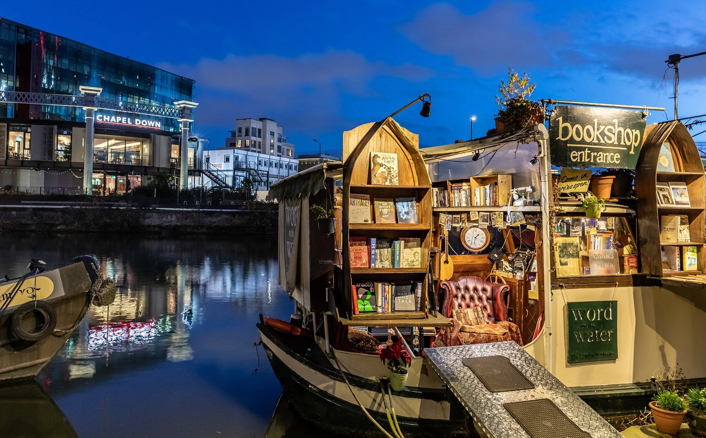
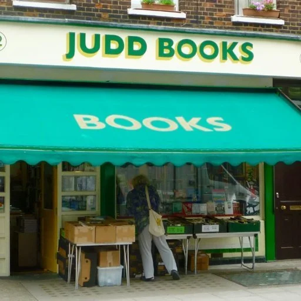
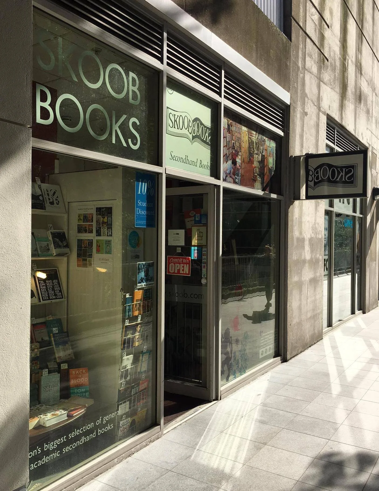
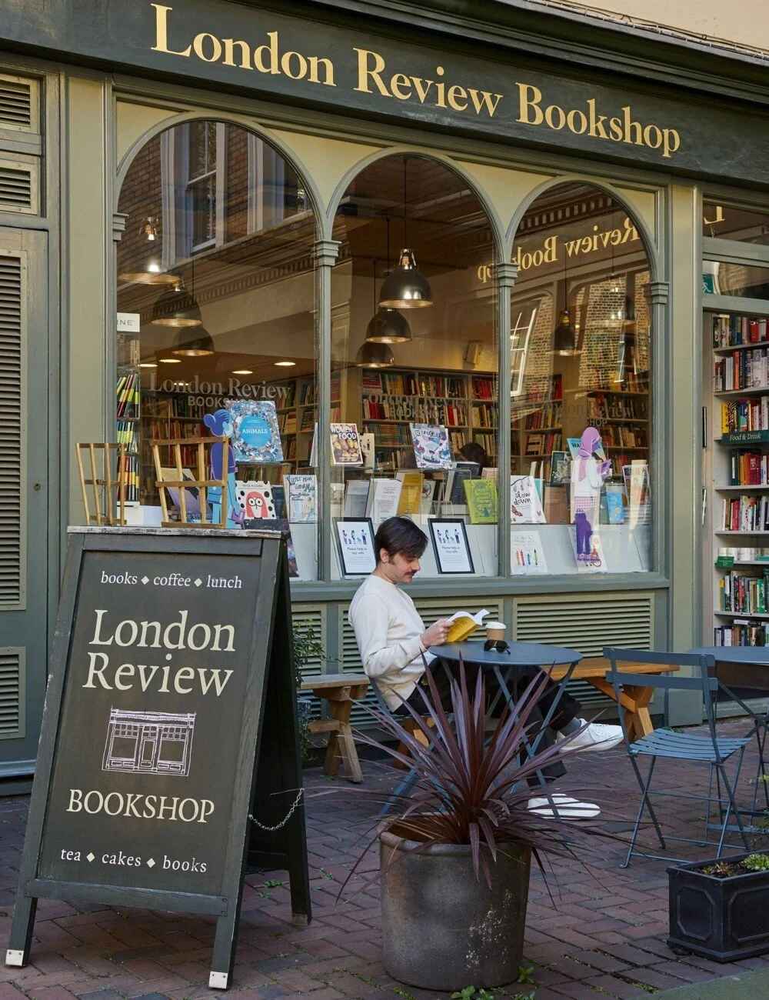
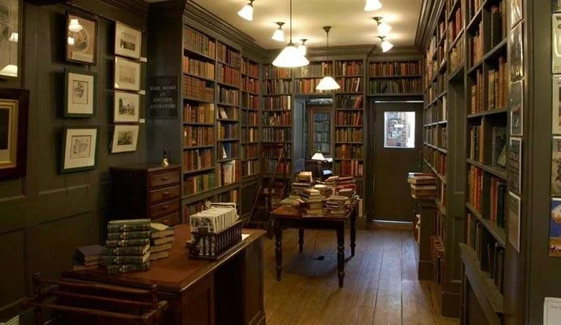
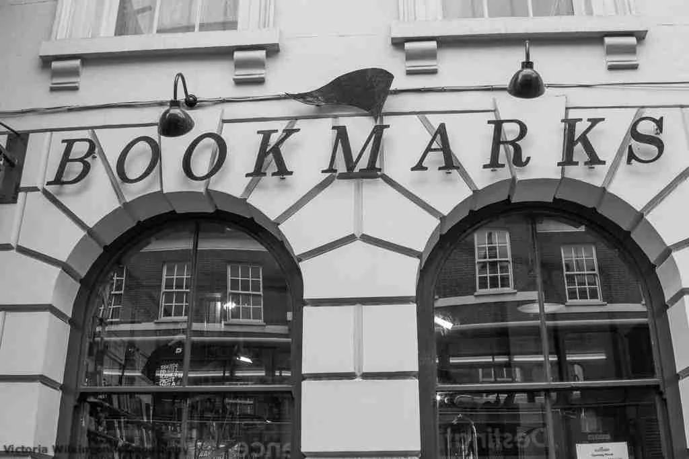
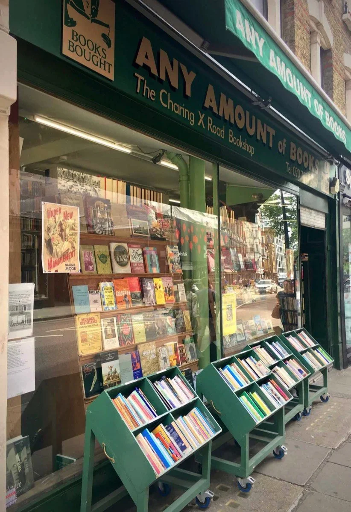

If you are a fellow book lover who enjoys a good walk, then London is one of the best places to be.
In this post, I've plotted a walking tour of London's most iconic independent bookstores.
I come back to this tour every now and again whenever I want a mixed dose of exercise and inspiration.
The walk itself is a little less than an hour, and takes you all the way from Regent's canal in King's Cross,
through Bloomsbury, the part of town long known for its bookshop and literary tradition, and down to Charing
Cross in the heart of London's vibrant West End.
Depending on how much time you spend browsing—and, hopefully, shopping—this walk can be the perfect way to
spend your day in the city and immerse yourself in its literary landscape. There won't be any shortage of
coffee, lunch, or cake spots along the way either.
Aside from independent bookstores, the route also passes by some iconic chains, like Foyles and Waterstones.
Whether you're looking for the latest bestsellers or rare, out-of-print titles, you'll definitely be spoiled
for choice.
Open route in Google Maps
Here are the bookstores you'll find on this route.

1. Word On The Water - The London Bookbarge
"Word on the Water, a bookstore on a barge, is truly a book-lovers paradise. Every nook and cranny of
this 100-year-old Dutch barge is stacked with neat rows of new and used classics, cult, contemporary
fiction and a large range of children's books."
Image and description taken from the King's Cross
website.

2. Housmans Bookshop
The first of two radical bookstores on this list, this not-for-profit bookstore has been running since
1945, selling new and secondhand publications on progressive politics.
Image taken from their official
website.

3. Judd Books
Trading for over 25 years, Judd Books has over 50,000 new and used books in the arts and social sciences.
Image and description taken from the bookstore's website.

4. Skoob Books
Skoob is one of London's largest second-hand bookstores, with thousands of uncatalogued academic works.

5. London Review Bookshop
One of my favorite bookstores in London. If you like to buy books new rather than used, and want a
bookstore well-stocked with all the new releases on a wide range of subjects, this one's for you. They
also have their own cake shop, which not only makes this bookstore one of the prettiest on this list,
but also the only one that smells strongly of coffee.

6. Jarndyce Booksellers
Jarndyce is a specialist bookstore in 18th and 19th century English Literature & History.

7. Bookmarks Bookshop
My favorite London bookstore of all, Bookmarks is a socialist bookstore with a range of books on
everything from politics to economics, the environment, black struggle, and even radical kid's books.

8. Any Amount of Books
This exceptional, old-fashioned bookstore stocks a large collection of used and rare books.